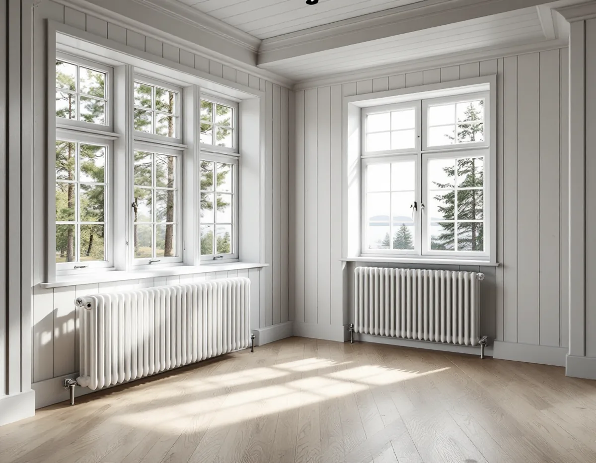
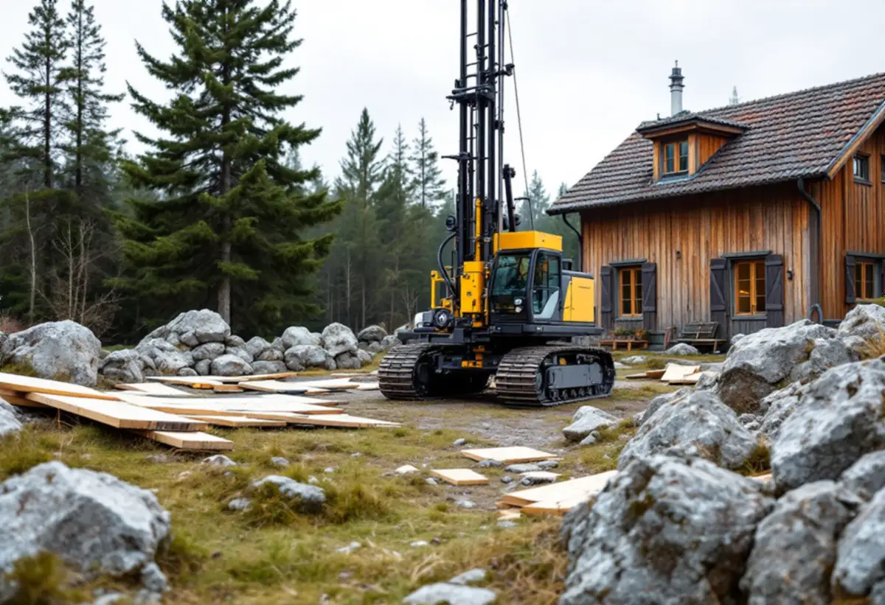

Platsbesök
Vi går igenom huset, dagens värmesystem, ventilationen och skorstenen.
När en villa ska renoveras från grunden är det ofta också läge att se över hur huset värms upp. Geal Entreprenad AB tar totalrenoveringar av villor i Nacka som en total entreprenad och planerar ett byte av värmesystem tillsammans med resten av ombyggnaden, så att rör, radiatorer och ventilation hamnar rätt från början.

Boverkets energiguide beskriver att en berg-, sjö- eller jordvärmepump kan installeras om huset har ett vattenburet värmesystem med golvvärme eller radiatorer. Saknas ett sådant system behöver det byggas först, och det arbetet är lättare att få in när golv och väggar ändå är öppna under en totalrenovering. Värmepumpen ska dimensioneras så att den täcker både värme och varmvatten.
Guiden påpekar också att åtgärder som minskar effektbehovet, till exempel att täta fönster och dörrar, gör att du kan välja en mindre värmepump och att borrhålet inte behöver bli lika djupt. Därför bestämmer vi först vad som ska göras med fönster, isolering och täthet, och låter installatören dimensionera värmepumpen efter det.
En sak glöms lätt bort. Har huset självdragsventilation bygger den på att skorstenen blir varm. När ved, olja eller pellets ersätts med en värmepump blir skorstensstocken kallare och ventilationen minskar, vilket enligt Boverket kan ge lukt, fukt och sämre inomhusluft, och fukt på vinden när den inte längre värms av skorstenen. Ventilationen behöver alltså ingå i samma plan.

Nacka kommun skriver att värmepumpar som tar upp värme från mark eller vatten måste anmälas, medan en luftvärmepump inte kräver någon anmälan. Anmälan görs i kommunens e-tjänst och ska ange typ av värmepump, borrhålets placering, borrföretag och installatör. Kommunen råder dig att börja med att välja installatör, som ofta hjälper till att anlita borrföretaget.
Borrhålet ska markeras på ett kartutdrag över fastigheten, som du kan hämta utan kostnad ur kommunens webbkarta, tillsammans med avståndet till närmaste tomtgräns och närliggande byggnad. Nacka tillämpar Sveriges geologiska undersöknings rekommenderade avstånd. Följs de inte räknas grannarna som berörda och har rätt att yttra sig. Motsätter sig en granne borrningen är det kommunen som avgör vem som har rätt.
Ligger villan i vissa delar av västra eller centrala Sicklaön måste kommunen rådfråga de ansvariga för utbyggnaden av tunnelbanan till Nacka innan borrningen bedöms. Bedömningen görs fastighet för fastighet, och på vissa fastigheter ska ett mätrör installeras i energibrunnen för att mäta grundvattennivån. Ligger fastigheten inom Sandasjöns vattenskyddsområde remitteras ärendet till Nacka vatten och avfall AB, och inom vattenskyddsområdets primära zon tillåts borrning vanligen inte.
Du som fastighetsägare ska enligt kommunen känna till var ledningarna för vatten, avlopp med mera går på tomten, och du står för eventuella kostnader om borrningen skadar dem. Husritningar och tjänsten Ledningskollen ger en bild av vad som finns i marken. Vattnet från borrningen tas vanligtvis om hand på den egna fastigheten om det kan infiltrera där, annars ska det avslammas i container och transporteras bort.
Sedan den 1 september 2026 kan småhusägare söka bidrag för energieffektivisering, och Nacka kommun hänvisar till sin energi- och klimatrådgivare, som ger opartisk och kostnadsfri rådgivning om vilka åtgärder och vilket uppvärmningssystem som passar huset. Enligt Boverket omfattas inte småhus som är anslutna till fjärrvärme eller har ett värdeår senare än 1989. Värdeåret kan justeras framåt vid större till- eller ombyggnader, så kontrollera uppgiften i beslutet om fastighetstaxering.
Bidraget gäller bara materialkostnader, och Boverket skriver att arbetskostnaden därför kan ge rotavdrag. Ansökan ska komma in inom sex månader från att åtgärden påbörjades, och projektering räknas inte som påbörjad åtgärd. Om köket i en äldre villa finns mer under köksrenovering i Nacka, om vatten och avlopp när du bygger under byggföretag i Nacka och om renovering av hela huset på sidan om villarenovering.
Vi går igenom huset, dagens värmesystem, ventilationen och skorstenen.
Fönster, täthet och isolering bestäms först, sedan dimensioneras värmen.
Arbete och material redovisas var för sig, vilket underlättar både bidrag och rotavdrag.
Bergvärme anmäls till kommunen innan borrningen börjar.
Vi samordnar rivning, borrning, installationer och ytskikt med en kontakt för hela projektet.
Vi går igenom huset och det nya värmesystemet tillsammans med dig.
Skatteverket ger rotavdrag för att installera och byta värmepumpar och värmepannor i ett småhus, men rotavdrag och skattereduktion för grön teknik kan inte ges för samma arbete. Markarbeten för värmeförsörjning och att riva väggar och bygga om planlösningen räknas också som rotarbete.
Företaget får dra av högst 30 procent av arbetskostnaden på fakturan. Rotavdraget är högst 50 000 kr per person och år och högst 75 000 kr tillsammans med rutavdrag. Material och resor ger inget avdrag. Geal drar avdraget direkt på fakturan.
Vilket värmesystem huset har i dag, om ett vattenburet system behöver dras in, hur mycket ventilationen behöver ändras och hur stor del av huset som renoveras väger tyngst. Efter ett gratis platsbesök får du ett skriftligt kostnadsförslag.
Renovera hela huset eller lägenheten.
Villarenovering →Takbyte, takbesiktning och plåtarbeten.
Takläggare i Nacka →Saltsjöbaden, Boo och Älta.
Takrenovering i Nacka →Saltsjöbanan, kommunens mark och kulturkartan.
Attefallshus i Nacka →VA, LTA och dagvatten på tomten.
Byggföretag i Nacka →Uthus, räcken och plåt kring villan.
Fasadmålning i Nacka →Villasamhällena vid Saltsjöbanan.
Fönsterbyte i Nacka →Linoljefärg, väder och verkstad för villafönster.
Fönsterrenovering i Nacka →Slipa och olja trägolvet.
Golvslipning i Nacka →Farledens plåttak och Saltsjöbadens villor.
Plåtslagare i Nacka →Skorsten, huvar och genomföringar vid nytt tak.
Takbyte i Nacka →Ny tapet och dold dekor i äldre villor.
Tapetsering i Nacka →Strandskydd och villasamhällen.
Tillbyggnad i Nacka →Villastäder, sommarhus och radhus.
Badrumsrenovering i Nacka →Sommarvillor, stugor och villor i Nacka.
Fasadrenovering i Nacka →Sommarvillor, stugor och hus med källarplan.
Golvläggare i Nacka →Radhuskök, sekelskiftesvillor och vedspis.
Köksrenovering i Nacka →Panelvillor och sommarnöjen i Nacka.
Målare i Nacka →Verandor, panel och altaner.
Snickare i Nacka →